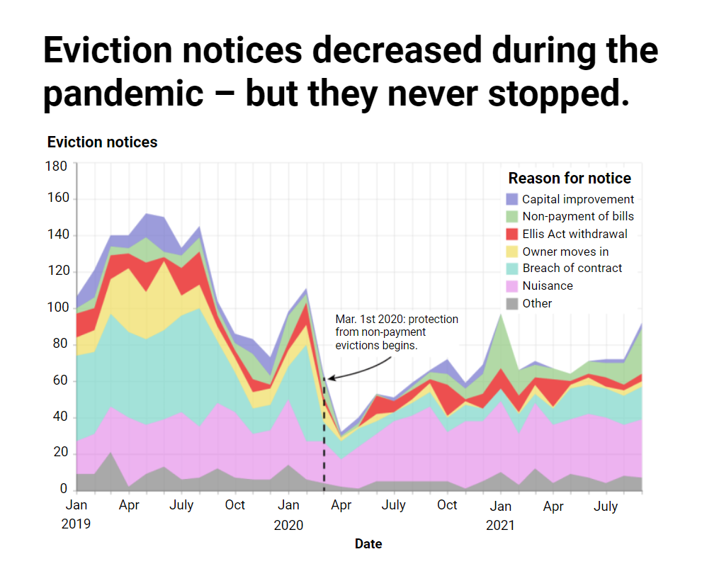
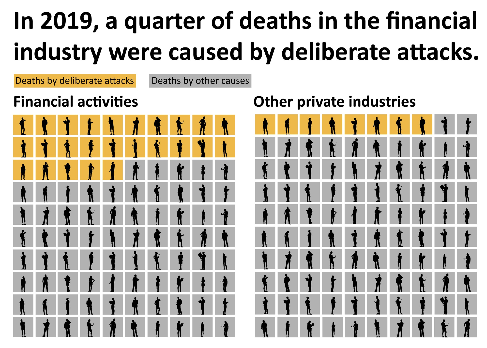

Here are a few interesting graphics from across my projects. Please drop me a message if you'd like to find out more about any of them.
Graphics gallery
By Will Jarrett

Created with NYC overtime data | Python, Altair, Illustrator

Created with NYC government shapefiles | QGIS, Illustrator

Created with Prof. Jonathan Powell's coup database | Python, Seaborn, Illustrator

Created with NYC recorded shootings data | QGIS, Illustrator
Created with San Francisco Open Data: 'Eviction Notices' | Python, Altair, Illustrator

Created with UK hate crime data | Python, Datawrapper

Created with OpenStreetMap and CalEnviroScreen data | Python, Illustrator

Created with scraped Goodreads data | Python, Altair, Illustrator

Created with interviews and NYC shapefiles | Google Earth, Illustrator
Created with US workplace injury data | Python, Illustrator

Created with various online sources | QGIS, Illustrator

Created with Californian Air Markets Program data | Python, Illustrator